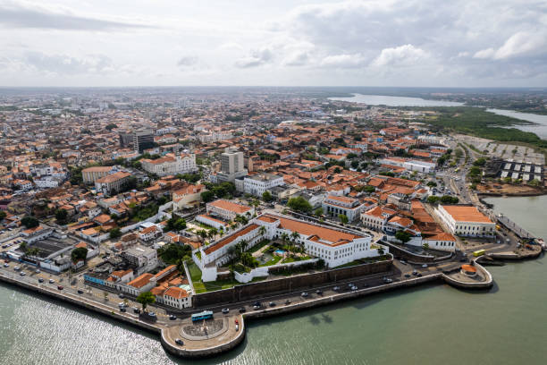

O Maranhão é um estado localizado na região Nordeste do Brasil, conhecido por sua rica cultura, história e belezas naturais. Sua capital é São Luís, uma cidade com um centro histórico bem preservado, que é Patrimônio Mundial da UNESCO. O Maranhão possui uma diversidade de paisagens, incluindo praias paradisíacas, dunas, rios e o famoso Parque Nacional dos Lençóis Maranhenses, com suas lagoas de água cristalina entre as dunas de areia branca. A economia do estado é baseada na agricultura, na pesca e na exploração de recursos naturais. Além disso, o Maranhão tem uma forte tradição cultural, com manifestações como o bumba-meu-boi, o tambor de crioula e festas populares que refletem a mistura de influências indígenas, africanas e portuguesas. Se quiser saber mais, estou aqui para ajudar!
